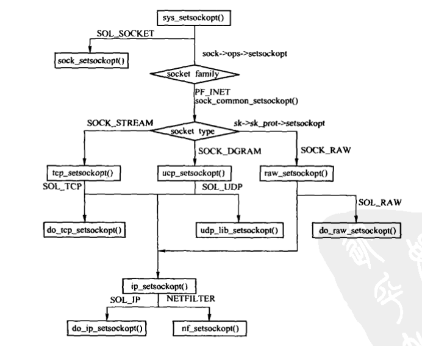
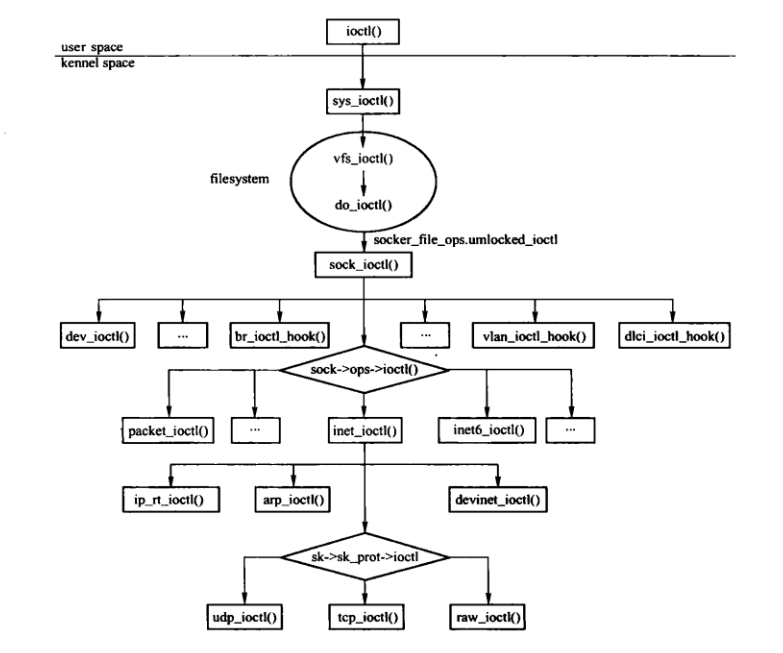

套接口选项
Table of Contents
1 setsockopt

Figure 1: setsockopt系统调用
/* * Set a socket option. Because we don't know the option lengths we have * to pass the user mode parameter for the protocols to sort out. */ asmlinkage long sys_setsockopt(int fd, int level, int optname, char __user *optval, int optlen) { int err, fput_needed; struct socket *sock; if (optlen < 0) return -EINVAL; sock = sockfd_lookup_light(fd, &err, &fput_needed); if (sock != NULL) { err = security_socket_setsockopt(sock, level, optname); if (err) goto out_put; if (level == SOL_SOCKET) //通用的套接口选项 err = sock_setsockopt(sock, level, optname, optval, optlen); else //否则调用套接口对应的 proto_ops 结构的setsockopt函数 err = sock->ops->setsockopt(sock, level, optname, optval, optlen); out_put: fput_light(sock->file, fput_needed); } return err; }
- so_DONTLINGER 用于禁止SO_LINGER选项，设置后会将传输控制块的sk_flags 的 SOCK_LINGER位清0
- SO_DEBUG 设置此选项后，网络模块会调用SOCK_DEBUG宏想屏幕或日志输出调试信息。
- SO_REUSEADDR
- 当socket1处于TIME_WAIT状态，socket2想占用socket1的地址和端口时，需要使用该选项
- SO_REUSEADDR允许在同一个端口上启动同一服务器的多个实例，但IP地址不能相同
- SO_REUSEADDR允许完全相同的地址和端口的重复绑定
- SO_TYPE 用于从传输控制块的 sk_type 成员获取套接口类型，例如 SOCK_DGRAM、SOCK_STREAM等。
- SO_ERROR 用于返回套接口的错误代码
- SO_DONTROUTE 设置后，无需查询路由表，直接通过套接口绑定的接口发送。
- SO_BROADCAST 设置后，表示套接口收发广播消息。 只对非SOCK_STREAM类型套接口有效
- SO_SNDBUF 和 SO_SNDBUFFORCE 设置套接口发送缓存上限。利用 SO_SNDBUF设置时，不能大于系统参数 sysctl_wmem_max，使用SO_SNDBUFFORCE设置时，没有上限限制。
- SO_RCVBUF 和 SO_RCVBUFFORCE 设置套接口接收缓存上限。使用 SO_RCVBUFF设置时，不能超过系统参数 rmem_max， 使用SO_RCVBUFFORCE设置时，没有上限。
- SO_KEEPALIVE 允许TCP套接口发送保活数据包。
- SO_OOBINLINE 设置后可以在带外数据中加入正常数据流，或者在普通数据流中接受带外数据。
- SO_NO_CHECK 用来决定UDP或RAW是否进行校验和
- SO_PRIORITY 设置发送或者转发的数据报的QOS类别。
SO_LINGER 设置或者获取关闭套接口的延迟时间值。
选项 间隔时间 关闭方式 是否等待关闭 SO_DONTLINGER 不适用 从容关闭 否 SO_LINGER 0 强行关闭 否 SO_LINGER 非零值 从容关闭 是 - SO_PASSCRED 允许或者禁止SCM_CREDENTIALS控制消息的接收，主要用于 PF_UNIX
- SO_TIMESTAMP 如果设置为TRUE,则将数据报接收时间作为时间戳。
- SO_PEERCRED 用于返回连接至当前套接口的外部进程的身份验证。
- SO_RCVLOWAT 用来设置接收缓存的下限值。
- SO_RCVTIMEO 用于获取或设置套接口的接收超时时间。
- SO_SNDLOWAT 获取发送缓存的下限
- SO_SNDTIMEO 用于在套接口上调用发送函数时，设定一个超时时间。
- SO_BINDTODEVICE 将套接口绑定到指定的网络设备上。
- SO_ATTACH_FILTER和SO_DETACH_FILTER 分别用于装载和卸载套接口的过滤器。
- SO_PEERNAME 获取对端的地址和端口信息。
- SO_ACCEPTCONN 用于获取套接口是否处于LISTEN状态。
2 ioctl

Figure 2: ioctl系统调用流程
2.1 ioctl在文件系统内的调用过程
ioctl系统调用 -> vfs_ioctl -> do_ioctl -> sock_file_ops -> ioctl
套接口文件的ioctl接口实现为 sock_ioctl()。
2.2 套接口文件ioctl调用接口的实现
/* * With an ioctl, arg may well be a user mode pointer, but we don't know * what to do with it - that's up to the protocol still. */ static long sock_ioctl(struct file *file, unsigned cmd, unsigned long arg) { struct socket *sock; void __user *argp = (void __user *)arg; int pid, err; sock = file->private_data; if (cmd >= SIOCDEVPRIVATE && cmd <= (SIOCDEVPRIVATE + 15)) { err = dev_ioctl(cmd, argp); } else #ifdef CONFIG_WIRELESS_EXT if (cmd >= SIOCIWFIRST && cmd <= SIOCIWLAST) { err = dev_ioctl(cmd, argp); } else #endif /* CONFIG_WIRELESS_EXT */ switch (cmd) { case FIOSETOWN: case SIOCSPGRP: err = -EFAULT; if (get_user(pid, (int __user *)argp)) break; err = f_setown(sock->file, pid, 1); break; case FIOGETOWN: case SIOCGPGRP: err = put_user(f_getown(sock->file), (int __user *)argp); break; case SIOCGIFBR: case SIOCSIFBR: case SIOCBRADDBR: case SIOCBRDELBR: err = -ENOPKG; if (!br_ioctl_hook) request_module("bridge"); mutex_lock(&br_ioctl_mutex); if (br_ioctl_hook) err = br_ioctl_hook(cmd, argp); mutex_unlock(&br_ioctl_mutex); break; case SIOCGIFVLAN: case SIOCSIFVLAN: err = -ENOPKG; if (!vlan_ioctl_hook) request_module("8021q"); mutex_lock(&vlan_ioctl_mutex); if (vlan_ioctl_hook) err = vlan_ioctl_hook(argp); mutex_unlock(&vlan_ioctl_mutex); break; case SIOCADDDLCI: case SIOCDELDLCI: err = -ENOPKG; if (!dlci_ioctl_hook) request_module("dlci"); if (dlci_ioctl_hook) { mutex_lock(&dlci_ioctl_mutex); err = dlci_ioctl_hook(cmd, argp); mutex_unlock(&dlci_ioctl_mutex); } break; default: err = sock->ops->ioctl(sock, cmd, arg); /* * If this ioctl is unknown try to hand it down * to the NIC driver. */ if (err == -ENOIOCTLCMD) err = dev_ioctl(cmd, argp); break; } return err; }
2.3 套接口层的实现
IPv4协议族的套接口层ioctl接口是 inet_ioctl()。
/* * ioctl() calls you can issue on an INET socket. Most of these are * device configuration and stuff and very rarely used. Some ioctls * pass on to the socket itself. * * NOTE: I like the idea of a module for the config stuff. ie ifconfig * loads the devconfigure module does its configuring and unloads it. * There's a good 20K of config code hanging around the kernel. */ int inet_ioctl(struct socket *sock, unsigned int cmd, unsigned long arg) { struct sock *sk = sock->sk; int err = 0; switch (cmd) { case SIOCGSTAMP: err = sock_get_timestamp(sk, (struct timeval __user *)arg); break; case SIOCADDRT: case SIOCDELRT: case SIOCRTMSG: err = ip_rt_ioctl(cmd, (void __user *)arg); break; case SIOCDARP: case SIOCGARP: case SIOCSARP: err = arp_ioctl(cmd, (void __user *)arg); break; case SIOCGIFADDR: case SIOCSIFADDR: case SIOCGIFBRDADDR: case SIOCSIFBRDADDR: case SIOCGIFNETMASK: case SIOCSIFNETMASK: case SIOCGIFDSTADDR: case SIOCSIFDSTADDR: case SIOCSIFPFLAGS: case SIOCGIFPFLAGS: case SIOCSIFFLAGS: //接口相关的操作 err = devinet_ioctl(cmd, (void __user *)arg); break; default: if (sk->sk_prot->ioctl) //调用网络接口层的ioctl err = sk->sk_prot->ioctl(sk, cmd, arg); else err = -ENOIOCTLCMD; break; } return err; }
3 getsockname
获取绑定在套接口fd上的本地地址。
asmlinkage long sys_getsockname(int fd, struct sockaddr __user *usockaddr, int __user *usockaddr_len) { struct socket *sock; char address[MAX_SOCK_ADDR]; int len, err, fput_needed; sock = sockfd_lookup_light(fd, &err, &fput_needed); if (!sock) goto out; err = security_socket_getsockname(sock); if (err) goto out_put; //调用套接口的proto_ops的getname接口，IPv4中是 inet_getname() err = sock->ops->getname(sock, (struct sockaddr *)address, &len, 0); if (err) goto out_put; err = move_addr_to_user(address, len, usockaddr, usockaddr_len); out_put: fput_light(sock->file, fput_needed); out: return err; } int inet_getname(struct socket *sock, struct sockaddr *uaddr, int *uaddr_len, int peer) { struct sock *sk = sock->sk; struct inet_sock *inet = inet_sk(sk); struct sockaddr_in *sin = (struct sockaddr_in *)uaddr; sin->sin_family = AF_INET; if (peer) { if (!inet->dport || (((1 << sk->sk_state) & (TCPF_CLOSE | TCPF_SYN_SENT)) && peer == 1)) return -ENOTCONN; sin->sin_port = inet->dport; sin->sin_addr.s_addr = inet->daddr; } else { __be32 addr = inet->rcv_saddr; if (!addr) addr = inet->saddr; sin->sin_port = inet->sport; sin->sin_addr.s_addr = addr; } memset(sin->sin_zero, 0, sizeof(sin->sin_zero)); *uaddr_len = sizeof(*sin); return 0; }
4 getpeername
获取套接口上的对端地址。